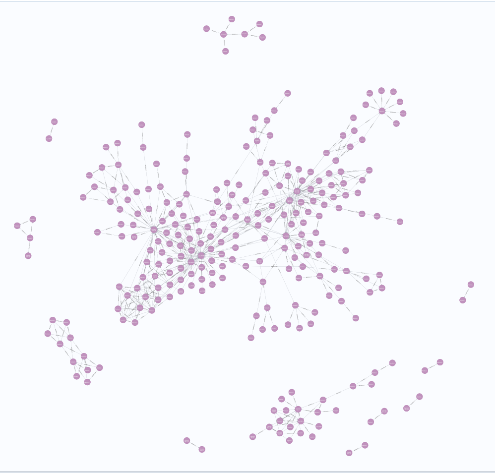
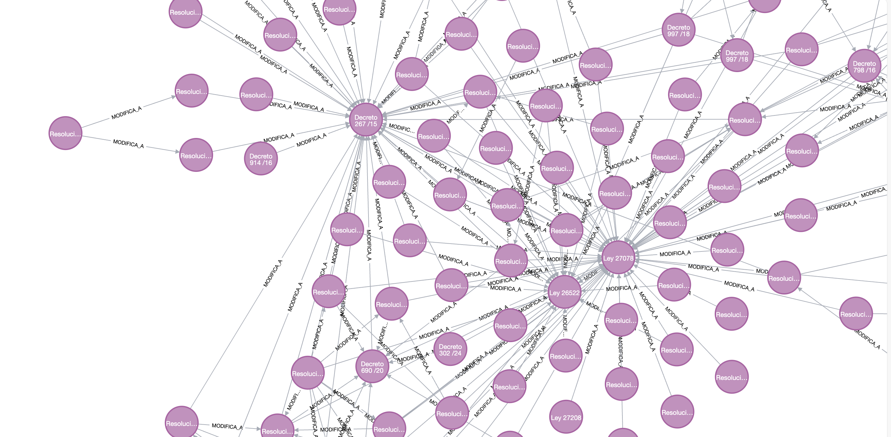
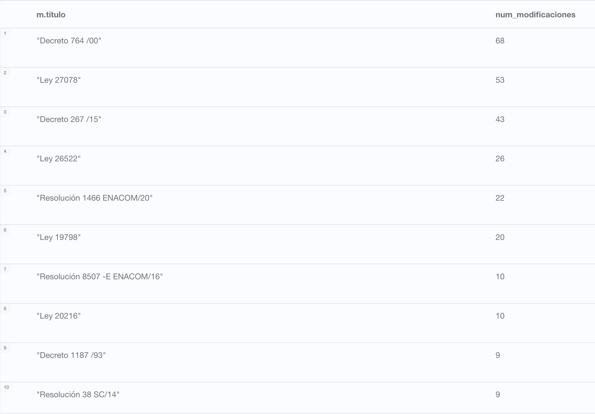

At the last Internet Day, organized by the Argentine Chamber of Internet (CABASE) on May 17 and 18, one of the topics discussed was regulatory simplification. How can we approach this issue from a data analysis perspective? One way is through graph analysis.
According to the National Communications Entity (ENACOM), there are 357 fundamental regulations that regulate the ICT sector in Argentina. On the other hand, Infoleg, the normative and documentary information system of the Argentine Republic, publishes in open format data on all the regulations in force in the country in three data sets: a base of regulations, a base of modified regulations, and a base of modifying regulations (here modifying and modified regulations are considered in a broad sense, that is, they include complementary regulations).
But what does this have to do with graph theory? A graph is a data structure consisting of a set of nodes and a set of edges that connect them. These edges can be directed (those where the relationship goes in one direction but not the other) or undirected (those where the relationship goes in both directions). In the case of regulations, we can think of a graph where the nodes are the regulations and the edges are the relationships between them.
First, I will read the data and load it into a Neo4j database, which is a graph database.
Code
import pandas as pdfrom neo4j import GraphDatabaseimport osnormas_fundamentales_tic = pd.read_csv("normas_fundamentales_tic.csv")normas_modificatorias_tic = pd.read_csv("normas_modificatorias_tic.csv")# Configurar la conexión a Neo4juri ="bolt://localhost:7687"# Ajusta según la configuración de tu Neo4jusername = os.getenv("NEO4J_USER")password = os.getenv("NEO4J_PASS")driver = GraphDatabase.driver(uri, auth=(username, password))def create_nodes_and_relationships(tx, normas_fundamentales_tic, normas_modificatorias_tic):# Crear nodos para normas fundamentalesfor index, row in normas_fundamentales_tic.iterrows(): tx.run("MERGE (n:Norma {id: $id, titulo: $titulo, grupo: $grupo, link: $link, notas: $notas, tipo: 'fundamental', boletin_oficial: $boletin_oficial})",id=row['id_norma'], titulo=row['norma'], grupo=row['grupo'], link=row['link'], notas=row['notas'], boletin_oficial=row['boletin_oficial'])# Crear relaciones "modifica a" o "es modificada por"for index, row in normas_modificatorias_tic.iterrows(): tx.run(""" MATCH (a:Norma {id: $id_modificatoria}), (b:Norma {id: $id_modificada}) MERGE (a)-[:MODIFICA_A]->(b) """, id_modificatoria=row['id_norma_modificatoria'], id_modificada=row['id_norma_modificada'])# Ejecutar la función en una sesiónwith driver.session() as session: session.execute_write(create_nodes_and_relationships, normas_fundamentales_tic, normas_modificatorias_tic)driver.close()
Now let’s see what the graph looks like.
The Figure 1 shows the graph of the fundamental and modifying regulations of the ICT sector in Argentina. The Figure 2 is a zoom of a part of the graph to better visualize the relationships between the regulations.
But what can we do with this graph? What interesting questions can we answer?

Figure 1: Grafo de normas fundamentales y modificatorias

Figure 2: Zoom al grafo de normas fundamentales y modificatorias
An interesting question could be: what are the 10 fundamental regulations that have been modified or complemented the most by other regulations?
Note
Neo4j uses a query language called Cypher. The previous question can be answered with the Cypher query shown below.
MATCH (n:Norma)-[:MODIFICA_A]->(m)
RETURN m.titulo, COUNT(n) AS num_modificaciones
ORDER BY num_modificaciones DESC
LIMIT 10

Figure 3: Tabla de normas fundamentales que más fueron modificadas o complementadas
Here the ranking is led by Decree 764/2000, the Digital Argentina Law, Decree 267/2015 which, among other things, created ENACOM, and the Audiovisual Communication Services Law.